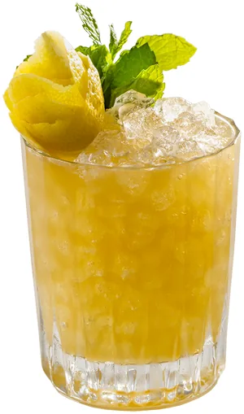

Robot Smash
Cítrico, con menta y maple
Ingredientes
- 60 ml de Ryes of the Robots
- 3 rodajas de limón
- 15 ml de almíbar de maple
- 2,5 ml de Fernet Branca
- 2,5 ml de almíbar demerara
- Menta
Preparación
Pisar el limón, la menta, el maple y el almíbar demerara en una coctelera. Agregar el rye y el Fernet y agitar con hielo. Servir en un vaso old-fashioned doble con hielo y decorar con menta y cáscara de limón.